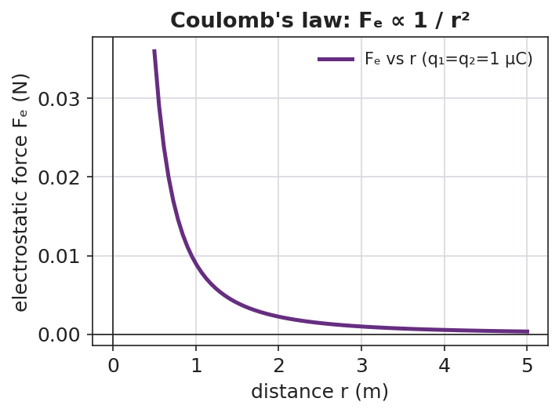

Unit: Electrostatics — Lesson 04: Coulomb's Law
Phenomenon
Your teacher drags two charged spheres in the PhET "Coulomb's Law" simulation. Doubling one charge doubles the force — no surprise. But halving the distance quadruples the force, and the readout looks just like the gravity behavior from the Forces unit.

Driving Question
How exactly does the force between two charges depend on the charges and on the distance between them?
Notice & Wonder
Watch the force readout change as the charges and distance change. Write what you notice and what you wonder.
Initial Model
Sketch two charges a distance r apart. Predict, in words, what happens to the force if you (a) triple one charge, (b) double the distance.
Investigate
Drag the sliders for the two charges and their separation. The readout computes Fe = k·q1·q2 / r² live (k = 8.99 × 10⁹ N·m²/C², charges in µC). The arrows on each charge scale with the force — and watch how strongly the force changes when you move r.
Fe = 2.0 N · repulsive
Make It Make Sense
- The two charges in the sim can have very different sizes. Which one feels the bigger force? Explain using the force-pair idea.
- If you triple both charges, what happens to the force? Show your reasoning.
- Coulomb's law has the same 1/r² shape as which force from the Forces unit? What does that tell you about how nature works?
Stuck? Because/But/So frame
"The electrostatic force gets stronger because ___, but ___, so ___."
Key Vocabulary (max 3)
- Coulomb's law — the rule that the electrostatic force between two charges is Fe = k·q₁·q₂ / r², with k = 8.99 × 10⁹ N·m²/C²
- electrostatic force — the attractive or repulsive force (Fe) between charged objects
- inverse-square law — a relationship in which a quantity falls off as 1/r²; shared by Coulomb's law and Newton's law of gravitation
Revise Your Model
Two charges of +2.0 × 10⁻⁶ C each sit 0.30 m apart. Use Fe = k·q₁·q₂ / r² to find the force (≈ 0.40 N, repulsive). Then state what happens to it if the distance is doubled (the force drops to one-quarter, ≈ 0.10 N). Set the sliders to check.
Return to the Phenomenon
In the sim, why did halving the distance quadruple the force? Answer in one Because/But/So sentence: halving r made r² one-quarter as big, but r² is in the denominator, so the force became four times larger.
Exit Ticket + Closing Reflection
- Use Fe = k·q₁·q₂ / r², k = 8.99 × 10⁹ N·m²/C².
(a) Two charges, q₁ = +3.0 × 10⁻⁶ C and q₂ = +3.0 × 10⁻⁶ C, are 0.20 m apart. Calculate the electrostatic force. Is it attractive or repulsive?
(b) Without recalculating from scratch, state what happens to the force if the distance is tripled.
(c) Coulomb's law shares its 1/r² shape with which force from the Forces unit? - Reflection: Which sentence stem (because / but / so) made the math click for you today, and why?